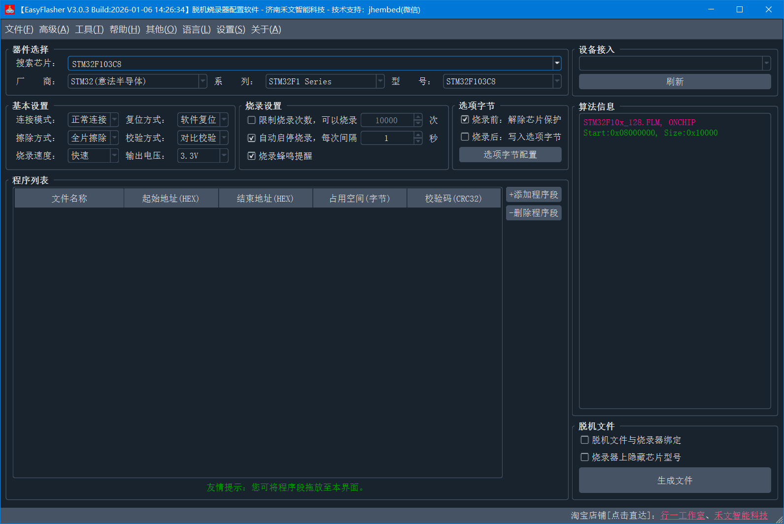

EasyFlasher-META脱机烧录器用户使用指南

购买链接
点击以下链接，或手机淘宝APP扫一扫二维码。
| 行一工作室 | 禾文智能科技 |
|---|---|
| https://item.taobao.com/item.htm?id=899498306572 | https://item.taobao.com/item.htm?id=909368817574 |
 |
 |
支持型号
资料下载
- 配套上位机软件：
- 蓝奏云网盘：https://wwwq.lanzouu.com/b0kobqich，提取码：5lxi
- 百度云网盘：https://pan.baidu.com/s/5isepgphcrZYN0uN-tT0kIg

文档修订历史
| 版本 | 日期 | 修订人 | 说明 | |
|---|---|---|---|---|
| V1.0 | 2025年3月13日 | - | 出版发布 | |
| V1.1 | 2025年5月24日 | - | 1.增加在线烧录章节 2.更新功能说明 |
|
| V1.2 | 2025年8月16日 | - | 修订新版META使用说明 | |
| V1.3 | 2025年9月9日 | - | 新增连接模式：上电复位模式说明 | |
| V1.4 | 2025年12月5日 | - | 增加Keil中Reset复位方式使用说明 | |
| V1.5 | 2026年1月6日 | - | 增加硬件设置说明 | |
| V1.6 | 2026年3月2日 | - | 更新设备界面图片 |
产品简介

- 外形尺寸：70x45x18mm
- 屏幕尺寸：1.54寸TFT彩屏（240x240分辨率）
- 烧录接口：SWD
- 工作电压：DC 5V (USB-Type C供电)
- 工作电流：50~300mA@5V
- 工作温度：-20℃~70℃
功能特点
- 超万种芯片支持，配套在线读写烧录软件，工程师的好帮手！
- 持续增加新芯片支持，永久免费升级固件；
- 支持选项字节可视化配置；
- 支持多固件存储，支持镜像切换；
- 支持限制烧录次数
- 支持滚码写入；
- 支持自动连续烧录；
- 支持输出1.8V/3.3V/5V电压可调；
- 支持低功耗模式下或SWD口被占用时的目标芯片烧录，烧录前自动复位目标芯片；
- 支持脱机文件与烧录器绑定，生成的脱机文件多重加密，保证用户固件安全；
- SWD协议深度优化，烧录速度超快；
- 在线调试、脱机烧录二合一，支持KEIL、IAR等软件的在线烧录、调试、仿真；
- 防反接保护，防止因操作不当烧坏烧录器
固件升级
当前最新固件版本：V3.0.3。
固件升级：
- 将烧录器切换至USB模式
- 打开EasyFlasher上位机软件->帮助->固件升级

接线说明
接线示例

引脚定义

机台信号控制
- CTRL：外部烧录控制，拉低50ms触发一次烧录
- STA1：烧录状态，高电平表示空闲，低电平表示正在烧录
- STA2：烧录结果，高电平表示烧录成功，低电平表示烧录失败
控制时序如下图所示：

设备界面展示

脱机烧录配置软件功能说明

见《脱机烧录配置软件功能说明》
脱机烧录

脱机烧录器在使用脱机烧录时，需使用配置软件生成.AKF格式的脱机文件。生成脱机文件的具体步骤如下：
- 选型实际使用的芯片型号；
- 进行基础设置，如连接方式、擦除方式、选项字节等；
- 点击【添加程序段】按钮将.bin或者.hex格式的固件文件添加至上位机内；
- 点击【生成脱机文件】按钮将.afk格式的脱机文件保存至电脑硬盘或直接保存至烧录器U盘内。
- 将烧录器切换为【USB模式】，烧录器显示界面如下图所示，切换后电脑上弹出U盘，将脱机文件复制到此U盘内即可。

在线烧写
注意：当使用【外部输入】模式时，外部供电电压支持3.3~5V，请勿超压供电！
将烧录器切换至【USB模式】，并提供DAPLink调试器功能。
可搭配我司上位机软件DAPLinkUtility对目标芯片在线读取、烧录、配置选项字节，解锁芯片等。
DAPLinkUtility使用说明，见《DAPLink上位机》。
Keil在线仿真调试
Keil配置
驱动安装
见《驱动安装》。
常见问题
硬件设置（个性化功能）
注意：此功能需要烧录器固件版本≥V3.0.3。请检查更新固件并升级：菜单->帮助->固件升级。
见《硬件设置》。